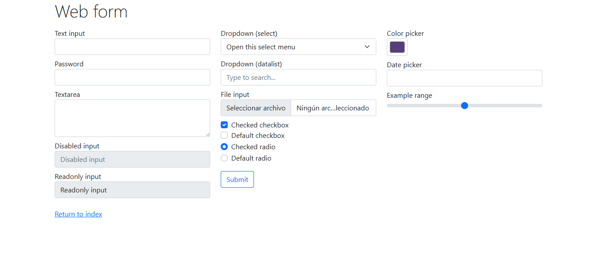
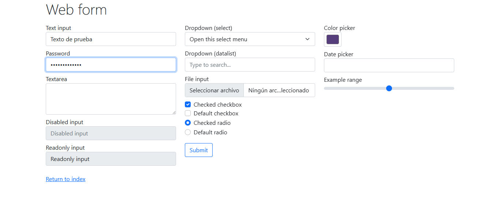
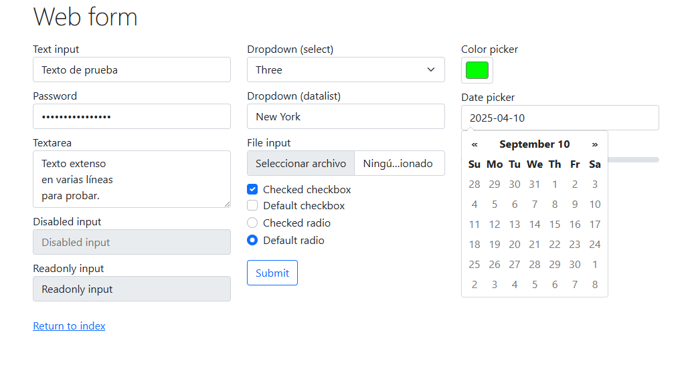
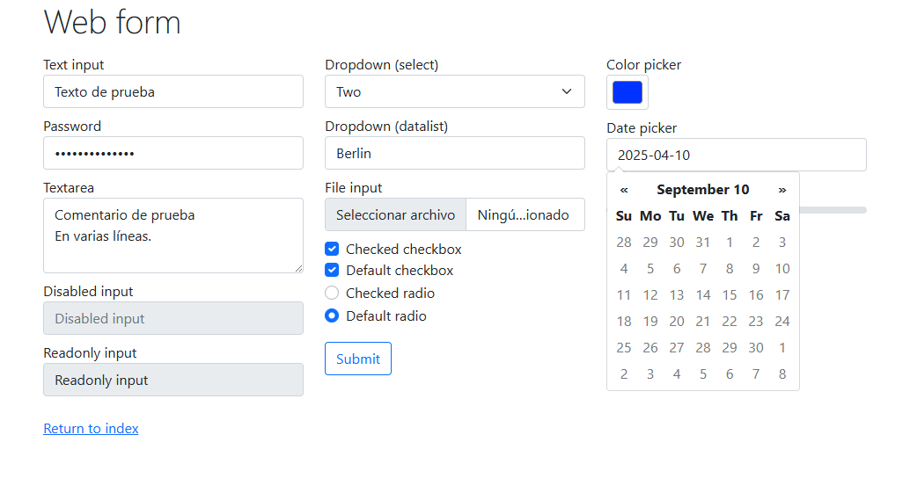
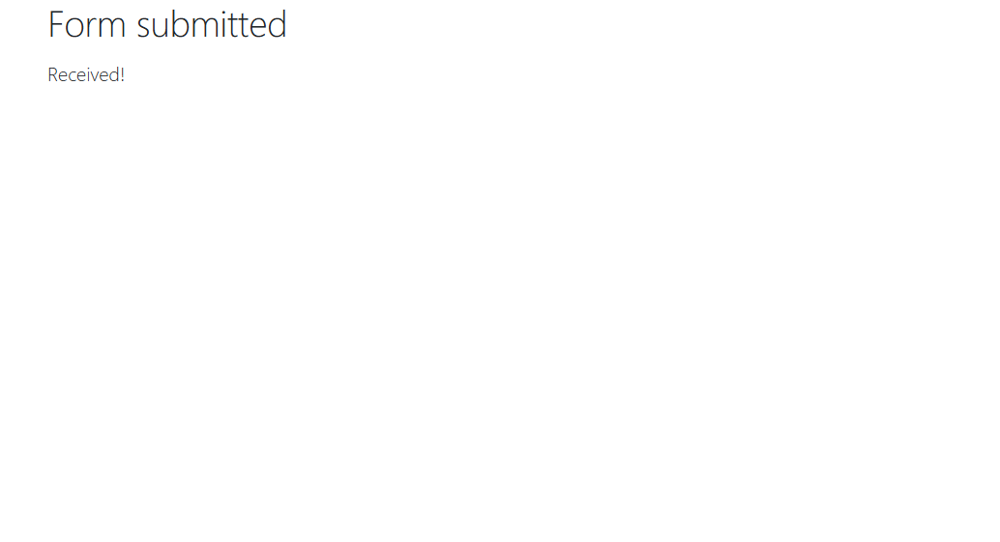
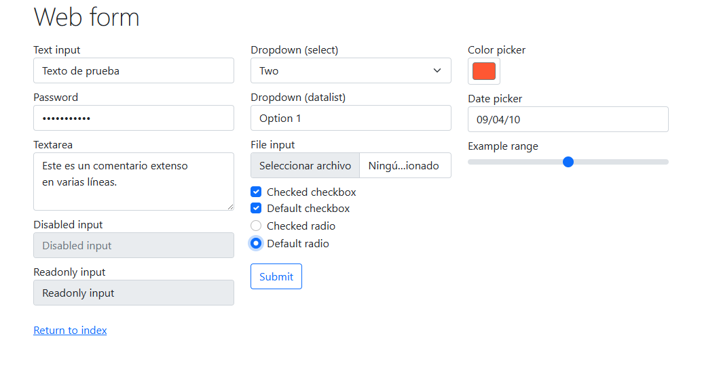

Reporte de Historias de Usuario - Selenium
Historia 1: Acceso a Página Web Específica
Como desarrollador, quiero poder acceder directamente a una página web específica utilizando únicamente su URL, para asegurarme de que la navegación básica funcione correctamente desde el navegador automatizado.
Criterios de aceptación:
- El navegador debe abrir correctamente la URL especificada.
- La URL debe coincidir exactamente con la proporcionada.
- Debe tomarse una captura de pantalla de la página cargada.
Criterios de rechazo:
- La URL redirecciona a otra página.
- No se carga completamente la web.
- La captura de pantalla no se genera correctamente.

Historia 2: Edición de Campos de Texto
Como usuario técnico, quiero poder ingresar texto en los campos de texto y contraseña de una página web específica, para validar que los campos aceptan entrada y responden correctamente.
Criterios de aceptación:
- Solo se permite el acceso a la URL autorizada.
- Se pueden llenar correctamente los campos de texto y contraseña.
- Se debe generar una captura después de llenar los campos.
Criterios de rechazo:
- Los campos no se llenan correctamente.
- La URL es diferente a la esperada.
- No se genera la captura final.

Historia 3: Llenado Completo del Formulario
Como evaluador de calidad, deseo completar todos los campos disponibles del formulario para verificar que el sistema puede manejar múltiples entradas correctamente y que todos los elementos interactivos funcionan.
Criterios de aceptación:
- Todos los campos deben ser completados sin errores.
- Debe seleccionarse un color y un rango adecuado.
- Se debe capturar una imagen con el formulario completamente lleno.
Criterios de rechazo:
- Algunos campos quedan vacíos.
- No se puede seleccionar color o rango.
- La captura de pantalla no se genera.

Historia 4: Envío del Formulario
Como usuario final, quiero llenar el formulario y enviarlo presionando el botón "Submit", asegurándome de que todos los datos sean procesados correctamente y se registre una evidencia de ello.
Criterios de aceptación:
- Todos los campos del formulario deben estar correctamente llenos.
- Los checkbox y radio deben estar seleccionados.
- Se debe tomar una captura justo antes del envío.
- Se debe tomar otra captura después del envío.
Criterios de rechazo:
- Formulario incompleto.
- Botón submit no funciona.
- No hay evidencia visual del envío.


Historia 5: Simulación de Múltiples Pestañas
Como analista de comportamiento del navegador, quiero simular el uso de múltiples pestañas, navegar a otra página, realizar una búsqueda, cerrarla y regresar al formulario original para verificar la estabilidad del sistema.
Criterios de aceptación:
- Debe llenarse primero el formulario completo de Selenium.
- Debe abrirse una nueva pestaña y realizarse una búsqueda en Google.
- Al cerrarse la pestaña secundaria, debe regresar y cerrar el navegador.
- Se debe tomar una captura antes de cambiar de pestaña y otra al final.
Criterios de rechazo:
- No se realiza correctamente la búsqueda en Google.
- La pestaña secundaria no se cierra.
- No se regresa a la página original correctamente.
